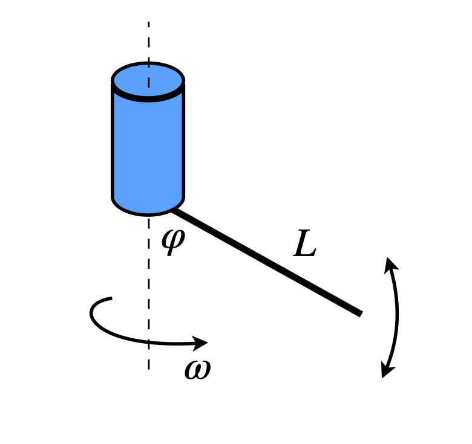
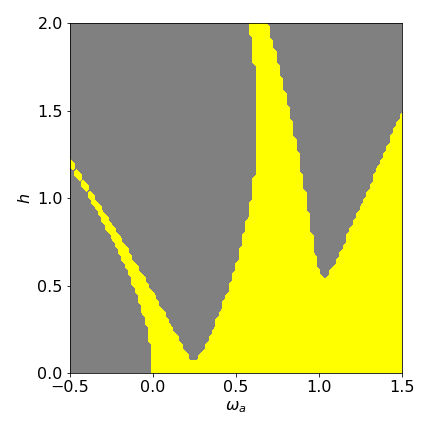

Questions 21 - 34¶
Q21 Predator - prey¶
The Lotka - Volterra equations show that the period varies with initial values of \(X_0, \;Y_0\). Plot several population curves vs time and the corresponding phase planes to convince you of this. Use the Euler method to calculate the populations and values given in the text as starting points. Use \(100\) points in the calculation.
Q22 Predator - prey¶
Using the Lotka - Volterra equations 49,
(a) Sketch what happens if the predators do not die by natural causes \(k_3 = 0\) and confirm this by calculation.
(b) What happens if an extra term is introduced into each equation; \(-k_{11}Y\) into \(dY/dt\) and \(-k_{22}X\) into the other equation, which removes by poisoning both prey (pest) and predator in proportion to their populations? This has been used as a way of controlling pests; does it work? Assume that the predators do die off naturally so that \(k_3 \ne 0\). Use values given in the text and \(k_{11} = 0.9\) and \(k_{22} = 0.2\).
Strategy: Consider the steady state or equilibrium populations. Plot the phase plane and nullclines, and compare these with the case when \(k_{11}\) and \(k_{22}\) are zero. Solve the equations using the Euler method with at least 500 points in the calculation. The text gives values \(X_0 = 60,\; Y_0 = 100,\; k_1 = 1,\; k_2 = 0.01,\; k_3 = 0.5\).
Q23 Predator - prey¶
Rewrite the predator - prey equations in reduced or dimensionless form by defining new parameters \(x = X/X_e\) and \(y = Y/Y_e\), thereby making the equilibrium point (1,1) on the x - y phase-plane. If the time is also redefined to be dimensionless as \(\tau = k_1t\), then the equations can be written with only one parameter, which is the ratio of \(k_3/k_1\). Recalculate the time profiles and phase plane for different ratios \(k_3/k_1\). A series of closed curves should be seen one inside the other as if contours on a bowl.
Q24 Modify predator - prey¶
A more realistic model for predator - prey interactions than equation 48 is to modify the equations to limit the prey population so that its numbers do not grow exponentially in the absence of predators. The numbers will be limited by the amount of food, irrespective of predation. One way to do this, starting with the basic predator - prey equations is to add a term to the prey equation that limits its population, depending on the square of its population: this is a term dependent on its ‘density’ and is called density dependent growth. This in chemical terms is a bimolecular process \(-k_dY^2\) and the squared term represents two \(Y\) species recombining to produce an inert product that takes no further part in the reaction. The equations are
Calculate the populations’ time dependence and phase plane with \(k_d = 0.002\) and use the values for other parameters given in the text and which are \(X_0 = 60,\; Y_0 = 100,\; k_1 = 1,\; k_2 = 0.01,\; k_3 = 0.5\). Explain the results you obtain.
Q25 Nerve impulses¶
In the discussion of the Fitzhugh - Nagumo equation, it was stated that when the \(v\) nullcline is raised sufficiently by a large value of \(C\) the \(w\) nullcline, which is a cubic, crosses it past its maximum, and this large value results in a new stable point being formed here rather than near to its lowest point and no oscillations occur. Show that phase plane plots similar to Fig. 11.22 are produced with different values of \(C\) using other values given in the text.
Q26 Catalysis¶
A molecule \(A\) reacts with another \(C\) to reproduce itself under conditions where \(C\) is kept at a constant concentration, i.e. is in vast excess or is continuously supplied. \(A\) also produces \(B\) which subsequently catalyses \(A\)’s destruction to an inert species \(X\). \(B\) decomposes by a first-order process also to an inert species \(X\). The reaction scheme is
Because \(C\) is held constant, the first reaction can be rewritten with a pseudo, first-order rate constant, \(k_1 = k'_1C\), equivalent to \(\displaystyle A \overset{k_1}\to A + A\). The rate of change of \(B\) is zero in the third step because it catalyses this reaction. This scheme also has a biological interpretation; \(A\), is a micro-organism that produces a chemical toxin \(B\) that will ultimately poison it.
(a) Write down the rate equations.
(b) Describe the equilibrium (steady state) points and nullclines.
(c) Calculate the concentration of species \(A\) and \(B\) up to time \(t = 600\), and also plot the phase plane with \(k_1 = 0.2,\; k_2 = 0.01,\; k_3 = 0.01,\; k_4 = 0.02\) and initial concentrations of \(A_0 = 50,\; B_0 = 0\).
(d) Comment on the results obtained.
Strategy: The rate equations are calculated by working out the change in the number of species in the usual way. \(A\) is gained in the first step and lost in the other two, while \(B\) is produced in the second step, unchanged in the third and lost in the last. The equilibrium points are calculated at steady state,\( dA/dt = dB/dt = 0\) and the numerical solution is calculated using Euler’s method.
Q27 Rigid pendulum¶
In this question, the motion of a rigid pendulum is examined, see Section 6.3 for the equations to use and use \(\omega = 1\).
(a) Set the pendulum initially to \(\varphi_0 = \pi\) but with zero velocity and observe what happens with the Euler, modified Euler, and Euler - Cromer methods. This is a test of how good the numerical algorithm is, because the pendulum should remain vertical forever. Repeat the calculation with the initial angle of \(3.0\) radians.
(b) Calculate the angle, velocity, and phase plane at several initial starting angles. Plot a graph of velocity vs time to illustrate how the non-linear motion increases with increase in the initial angle.
Strategy: (a) Use \(5000\) points in the calculation (b) \(500\) points will suffice here and initial angles between \(\pi\) and zero radians; the values \(3, 1.5, 0.5\) and \(0.25\) radians should work.
Q28 Damped pendulum¶
A damped pendulum can be made by having a pivot that has some resistance to motion or a bob that experiences air resistance. The equation of motion becomes
where \(f\) is the friction coefficient with units of rad s\(^{-1}\). Because of friction, the pendulum loses energy and will eventually become stationary. If \(\omega = 1\) and \(f = 0.25\), calculate the profile, angle vs time, with initial angle \(8\pi/9\) and a zero initial velocity. Calculate the corresponding phase plane, which cannot easily be done algebraically.
Q29 Coupled oscillators¶
Suppose that there are two coupled oscillators. In the limit that one of them has motion with a period far greater or smaller than the other, then the oscillators hardly affect one other. This decoupling always occurs when vastly different frequencies are involved is a universal types behaviour that is just as common in simple dynamical systems as it is in the complicated vibrational, rotational, and electronic behaviour of molecules.
This question shows how two different oscillators, a pendulum attached to a rotating shaft, can produce a complicated but understandable motion. The figure shows a rigid pendulum freely suspended beneath a rotating rod. The equation of motion is
(a) Calculate the equilibrium points, nullclines, phase plane, and the angle and the change of the velocity of the pendulum with time.
(b) Consider the cases when \(L\) is very long so that \(a/L \ll \omega^2\) and when very short.

Figure 24. A rigid pendulum attached to the base of a rotating rod.
Q30 Rotating rigid- rod¶
Starting with Q29 in which a rigid rod freely hangs from a rotating shaft and has the equation of motion
calculate the period of the pendulum when
(a) \(\varphi \to 0\) and
(b) \(\varphi = \varphi_0\) where \(\varphi_0\) is the initial angle given by \(\varphi_0= \cos^{-1}\left(a/(L\omega^2)\right)\)
(c) Assume \(\varphi - \varphi_0\) is not small and show that \(\displaystyle \frac{d^2\varphi}{dt^2}=\omega^2\varphi\sin^2(\varphi)\) by ignoring a \(\varphi^2\) term. What does this equation represent?
Strategy: In (a) approximate the series expansion to small angles. In (b) Use a Taylor series expansion about \(\varphi_0\), and take only the first two or three terms to approximate to small values. In (c) It will be useful to change the angle to \(\varphi \to \varphi - \varphi_0\) in the equation of motion.
Q31 Vertical oscillations¶
Suppose that a light, rigid pendulum of length \(L\) has a heavy bob of mass \(m\) at its end and its pivot is driven up and down at frequency \(\omega\) by a piston which has a displacement \(z = a \sin(\omega t)\). The pendulum’s equation of motion is
where \(h = a/L\) and \(\omega_0 = \sqrt{g/L}\) is the natural frequency of the pendulum. This equation may be arrived at by replacing the acceleration due to gravity in the normal pendulum equation by \(g - d^2z/dt^2\) where \(-d^2z/dt^2\) is the downward acceleration of the pivot.
Calculate the time profiles and plot the phase plane when the piston’s frequency is greater than the pendulum’s natural frequency. The fact that the pendulum is driven means that the two motions are coupled and this can lead to rather complicated motion, but with the following parameters the overall motion is clear: \(\omega = 10,\; h = 0.3, \omega_0 = 1\), and \(\varphi_0 = 3\pi/4\). The pendulum is initially \(45^\text{o}\) from the vertical. Explain the motion produced.
Strategy: This calculation is very sensitive to the parameters used, using either the modified Euler method or an inbuilt Python/numpy solver. The values here will work, but if \(h\) and \(\varphi\) are increased by only a small amount, the calculation appears to become unstable. This may be partly overcome by adding a damping term \(+cdy/dt\) to the left-hand side of the equation and where \(c\) is a small constant \(\approx 0.5\) or smaller. This interesting system and its regions of stability are described by Acheson (1997). See also Gould et al. (2007) for suggestions for parameters with which to study this system.
Q32 Quadrupole mass spectrometer¶
The Mathieu equation is found in a number of physical situations one of which is describing the motion of ions through a quadrupole mass spectrometer and in the related Paul ion trap. The equation has the form
and is therefore similar to that of a pendulum hanging beneath an oscillating mount, which was described in Q31, provided that \(\sin(\varphi) \to \varphi\). This means that the initial angle measured away from the vertical is small. The natural period of the pendulum is \(\omega_0\), and the mount moves with frequency \(\omega\).
If the initial angle is exactly zero and so is the initial velocity, then the motion of the pendulum is purely vertical and no oscillation should occur, there being no forces other than purely vertical ones. If, however, a small perturbation occurs so that the initial angle in not zero or initial velocity not zero the pendulum starts to oscillate and its amplitude may grow indefinitely or may be stable. This means that there are regions of stability and instability and these are difficult to predict. The figure below shows some of the stable and unstable regions which was calculated numerically but slowly using a square grid of values.
Show that with an initial angle of \(0.01\) degrees and zero initial velocity that
(a) the motion is unstable if \(h = 0.4\) and \((\omega/\omega_0)^2 = 0.4\) because the pendulum’s amplitude continuously grows.
(b) when \(h = 1.75\) and \((\omega/\omega_0)^2 = 0.75\) the motion is stable.
Strategy: Preferably, use the fourth-order Runge - Kutta method to solve the equations, which can be separated as in Q31. Use a minimum of \(1000\) steps and time up to \(t = 200\).
Exercise: You can investigate the stability regions by observing if the phase plane spirals outwards or not for different sets of parameters. Choose \(h\) starting at zero and \((\omega/\omega_0)^2\) from \(0 \to 2\). A graph of the stability regions are given by Acheson (1997) and a similar one shown below.

Figure 24a: Rather crude stability diagram for the Matthieu equation. \(\omega_a=(\omega/\omega_0)^2\). The stable region is shown in yellow.
Q33 Oscillating chemical reaction¶
The chlorine dioxide - iodine - malonic acid reaction is known to be an oscillating chemical reaction; see Scott (1995). The reaction conditions are made in such a way that, initially, concentrations are far from equilibrium, as they must if any chemistry is going to happen. The concentration of I\(^-\) and ClO\(_2^-\) ions are observed to oscillate in time, but eventually this ends as the reaction reaches equilibrium. The free energy (\(\Delta G\)) of the reaction continuously decreases to its minimum value at equilibrium. If fresh reactants are continuously added to a stirred reactor, then the oscillations can be made to persist.
If MA is malonic acid, then the stoicheiometric reactions are
The reaction scheme is more complicated than this stoicheiometry suggests, but has be simplified by Lengyel (1990) using a quasi, steady - state approximation. This is possible because the malonic acid, iodine, and chlorine dioxide concentrations vary rapidly during the reaction, and far more so than the intermediates I\(^-\) and ClO\(_2^-\), which can be replaced by their average values. When this is done and the reaction scheme is put into dimensionless form, two equations result
where \(x \equiv \mathrm{[I^-]},\; y \equiv \mathrm{[CIO_2^-]}\) and \(a\) and \(b\) are positive constant numbers depending on fixed concentrations and rate constants. It is assumed in this scheme that an unending supply of reagents is available.
(a) Find the stable points and the nullclines, and plot on the phase plane together with some trajectories, each calculated numerically, with constant parameters \(a = 8\) and \(10\) and \(b = 2\). Choose a few starting values close to the equilibrium point and a few some distance away.
(b) Comment on the different behaviour of the two parameter sets.
Q34 Limits with Fitzhugh-Nagamo eqn.¶
Show that in the Fitzhugh - Nagumo equations, the oscillation period is always the same in a limit - cycle by repeating the calculation with different starting conditions \(v_0, \; w_0\) using the parameters in the text.